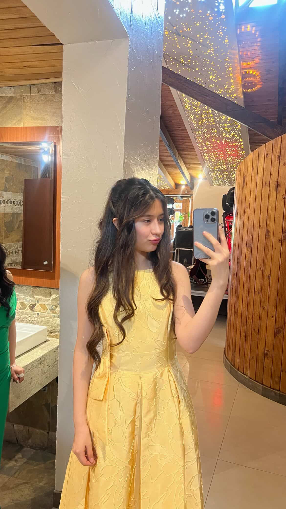
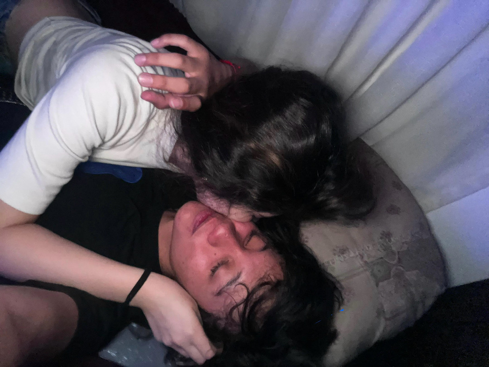
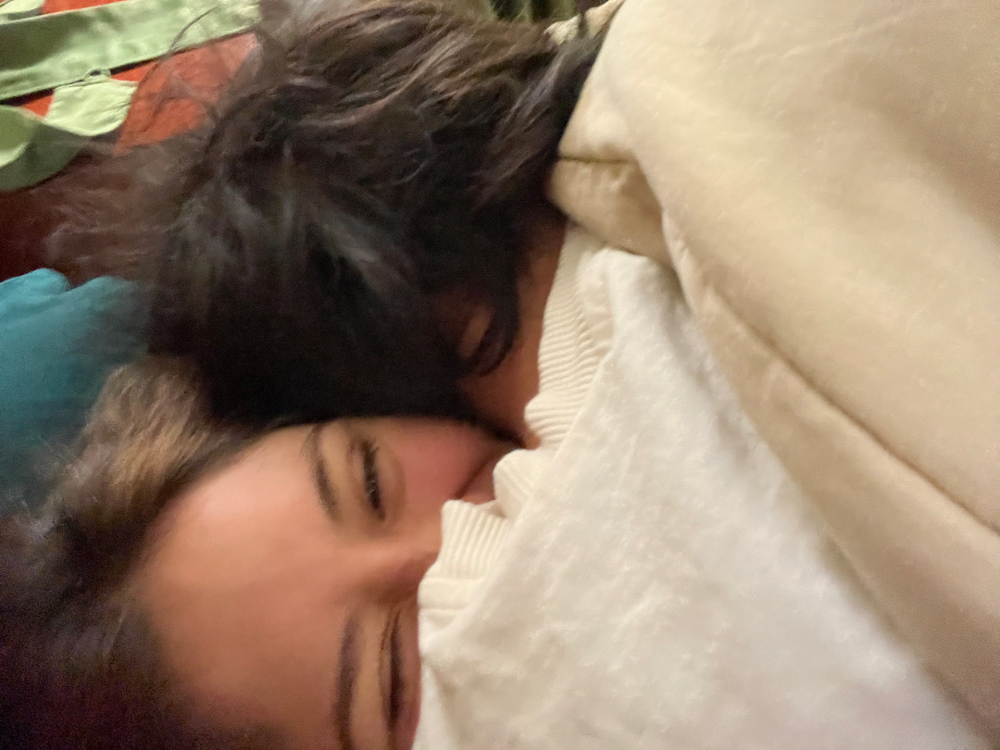
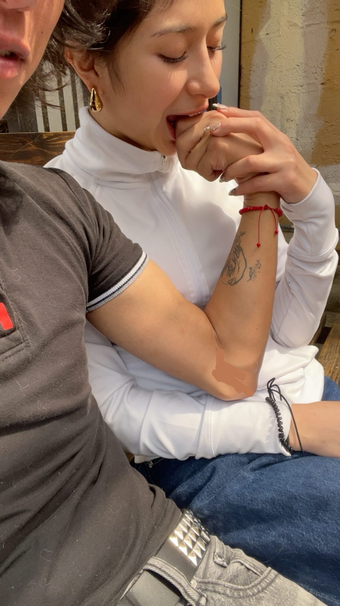
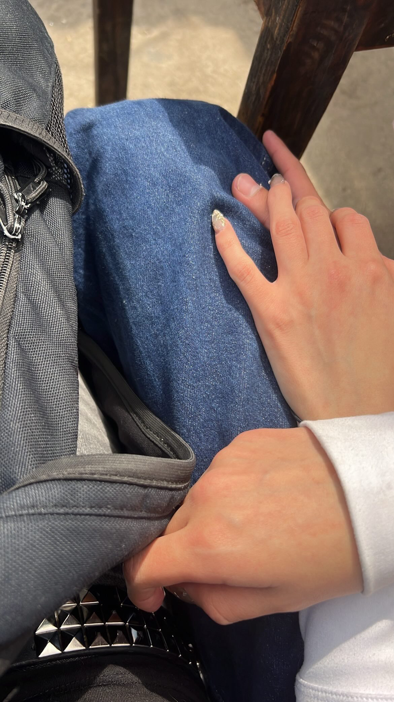
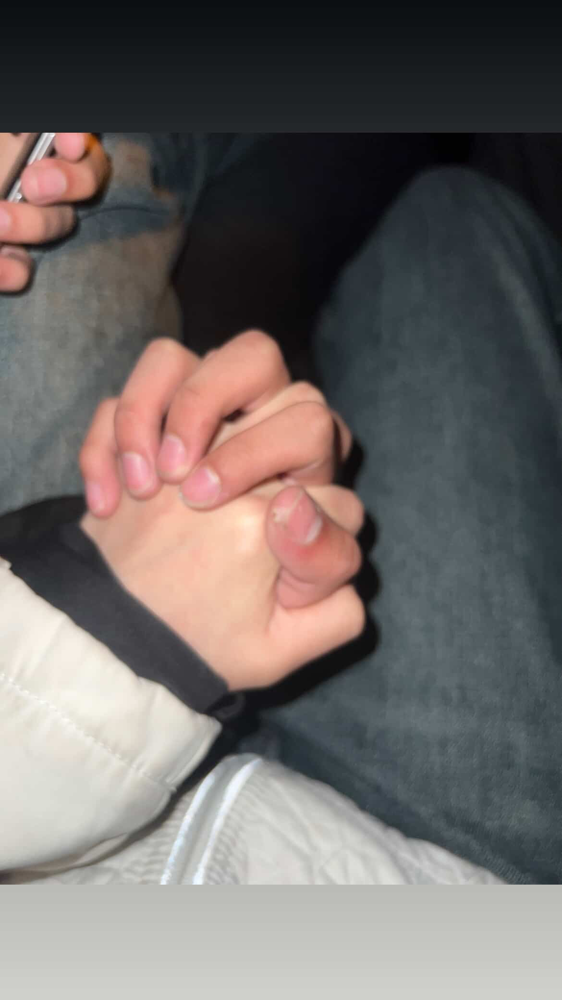

Érase una vez nosotros
Un cuento que escribí para ti.
La princesa del vestido amarillo
Un cuento sobre dos mundos, un encuentro que tardó años y un amor que aún busca su eternidad.
Los pequeños detalles
Lo que parece poco y termina siendo todo.
- La pasta que me cocinaste.
- La lasaña que comimos.
- El sushi y las hamburguesas.
- El arroz con huevo, jamón y salsa de tomate que te cociné yo, y que no fue una obra maestra, pero nos hizo dormir toda la tarde.
Todas nuestras noches
En llamada, scrolleando juntos, viendo una peli, haciendo nada.
Cualquier plan se volvía bonito si era contigo. Y todavía nos quedan películas pendientes.
El sol y la luna
Siempre te dije que tú eras el sol y yo la luna. Tú me abrigabas, incluso cuando yo no sabía cómo agradecerlo.
Y cuando viajabas me sentía justo así: el sol y la luna comparten el mismo cielo, pero casi nunca se ven. Por más que te quisiera, no podía verte.
Nuestros momentos
Toca una foto para verla en grande.






No todo fue tan bonito, pero fue real
No quiero recordar nuestra historia como si todo hubiera sido perfecto, porque no lo fue.
Hubo momentos en los que mis propias decisiones terminaron haciéndote daño. Momentos en los que mis excesos, mis actitudes y las cosas que hacía sin pensar en las consecuencias terminaron preocupándote, cuando lo que yo quería era tenerte cerca y hacerte feliz.
Sé que hubo ocasiones en las que te hice sentir que no podías estar tranquila conmigo. Que tuviste que preocuparte por mí, por cómo estaba y por lo que podía pasarme. Y entiendo que querer a alguien no significa tener que vivir con ese miedo.
También sé que decir que estaba mal no borra lo que hice, y que arrepentirme no significa que las cosas dejen de doler automáticamente.
No quiero justificarme con mis problemas ni pedirte que olvides lo que pasó. Quiero reconocer que hubo cosas que debí hacer de otra manera y que algunas heridas no se arreglan solamente hablando de cuánto nos queremos.
Porque tú no fuiste una persona más en mi vida. Fuiste alguien con quien imaginé cosas que nunca había imaginado de la misma manera con nadie.
Y si algo he ido comprendiendo, es que quererte no puede consistir solamente en tener miedo de perderte. También tiene que significar aprender a cuidarme, hacerme responsable de mis decisiones y trabajar en mí, independientemente de lo que suceda entre nosotros.
No escribo esto para que sientas que tienes que darme otra oportunidad. Lo escribo porque nuestra historia merece ser recordada con honestidad.
Lo bonito que vivimos fue real.
Y también lo fueron las cosas que nos dolieron.
No quiero borrar ninguna de las dos verdades.
Para ti, Valentina
No sé muy bien por dónde empezar, porque contigo siento que podría escribir muchísimo y aun así quedarme con cosas por decir.
Nunca pensé que una fecha pudiera guardar tantos recuerdos para mí. Nuestro primer beso fue el comienzo de algo que terminó significando muchísimo más de lo que habría imaginado aquel día.
Sé que cometí errores y que algunas de mis decisiones te hicieron daño. No te digo esto para que sientas lástima ni para que tengas que perdonarme. Tampoco quiero prometerte un cambio solo porque tengo miedo de perderte. Quiero aprender a hacer las cosas mejor porque sé que lo necesito, por mí y por la vida que quiero construir.
A veces he sentido que nuestros mundos eran muy diferentes, y me he preguntado si algún día podré construir algo de lo que me sienta orgulloso y compartirlo contigo. Pero no quiero que esa diferencia sea una excusa para sentirme menos ni para dejar de crecer.
Y sí, todavía hay una parte de mí que sueña con un para siempre contigo. Pero un para siempre no puede depender solo de lo que yo quiera: tiene que ser algo que los dos deseemos, sin presión, sin miedo y sin sentir que le debemos algo al otro.
Si algún día seguimos escribiendo esta historia, me gustaría hacerlo con más tranquilidad, más responsabilidad, más confianza y más hechos que palabras. No tienes que vivir preocupándote por mí para quererme.
Gracias por las veces que compartiste tu tiempo conmigo, por los momentos en los que me hiciste feliz y por haber formado parte de una historia que comenzó mucho antes de nuestro primer beso.
No sé si estas palabras explican todo lo que siento. Probablemente no. Pero son mías, y quería que las tuvieras.
Con todo el cariño que guardo por ti,
Pedro.
Nuestra canción
Escanea el código con tu celular o toca el botón para abrirla en Spotify.
 Abrir en Spotify
Abrir en Spotify
Y si alguna vez vuelves a estas páginas...
Ojalá recuerdes que, antes de todas las dificultades, hubo dos personas que se encontraron de una manera bastante inesperada.
Dos personas que hablaron durante años, que casi se encontraron y no lo hicieron, que volvieron a coincidir, que bailaron, que se abrazaron antes de atreverse a darse un beso y que, un 31 de enero, comenzaron a escribir un recuerdo que todavía vive en mí.
No sé qué lugar tendrá nuestra historia en el futuro. Pero sé que lo que vivimos significó mucho para mí.
Y si algo deseo, es que los recuerdos bonitos puedan existir sin borrar los difíciles; que podamos mirar atrás sin dejar de aprender y que, pase lo que pase, ambos encontremos la tranquilidad y la felicidad que merecemos.
Yo todavía guardo aquella imagen tuya con tu vestido amarillo. Y, de alguna manera, también guardo todo lo que soñé mientras te miraba.
Esta página es solamente un pequeño lugar para dejar esos recuerdos a salvo del tiempo.
No tienes que responder nada.
No tienes que decidir nada.
Solo quería que supieras que nuestra historia fue importante para mí.
Gracias por haber sido tú, Valentina.
Y gracias por aquel 31 de enero.